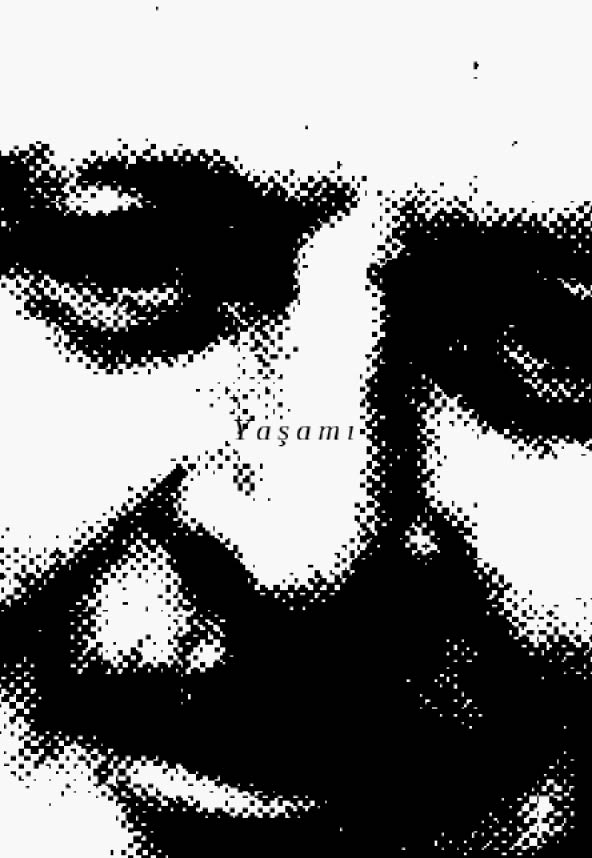
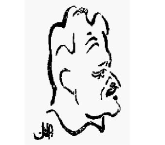

Ben, bir insan.
Ben Türk şairi Nâzım Hikmet ben,
Tepeden tırnağa insan,
Tepeden tırnağa kavga, hasret ve ümitten
ibaret ben...
OTOBİYOGRAFİ
Nâzım Hikmet
1902’de doğdum
doğduğum şehre dönmedim bir daha
geriye dönmeyi sevmem
üç yaşımda Halep’te paşa torunluğu ettim
on dokuzumda Moskova Komünist Üniversite öğrenciliği
kırk dokuzumda yine Moskova’da Tseka-Parti konukluğu
ve on dördümden beri şairlik ederim
kimi insan otların kimi insan balıkların çeşidini bilir
ben hasretlerin
kimi insan ezbere sayar yıldızların adını
ben hasretlerin
hapislerde de yattım büyük otellerde de
açlık çektim açlık grevi de içinde ve tatmadığım yemek
yok gibidir
otuzumda asılmamı istediler
kırk sekizimde Barış madalyasının bana verilmesini
verdiler de
otuz altımda yarım yılda geçtim dört metre kare betonu
elli dokuzumda on sekiz saatta uçtum Pırağ’dan Havana’ya
Lenin’i görmedim nöbet tuttum tabutunun başında 924’de
961’de ziyaret ettiğim anıt kabri kitaplarıdır
partimden koparmağa yeltendiler beni
sökmedi
yıkılan putların altında da ezilmedim
951’de bir denizde genç bir arkadaşla yürüdüm üstüne
ölümün
52’de çatlak bir yürekle dört ay sırtüstü bekledim ölümü
sevdiğim kadınları deli gibi kıskandım
şu kadarcık haset etmedim Şarlo’ya bile
aldattım kadınlarımı
konuşmadım arkasından dostlarımın
içtim ama akşamcı olmadım
hep alnımın teriyle çıkardım ekmek paramı ne mutlu bana
başkasının hesabına utandım yalan söyledim
yalan söyledim başkasını üzmemek için
ama durup dururken de yalan söyledim
bindim tirene uçağa otomobile
çoğunluk binemiyor
operaya gittim
çoğunluk gidemiyor adını bile duymamış operanın
çoğunluğun gittiği kimi yerlere de ben gitmedim 21’den beri.
camiye kiliseye tapınağa havraya büyücüye
ama kahve falına baktırdığım oldu
yazılarım otuz kırk dilde basılır
Türkiyem’de Türkçemle yasak
kansere yakalanmadım daha
yakalanmam da şart değil
başbakan filân olacağım yok
meraklısı da değilim bu işin
bir de harbe girmedim
sığınaklara da inmedim gece yarıları
yollara da düşmedim pike yapan uçakların altında
ama sevdalandım altmışıma yakın
sözün kısası yoldaşlar
bugün Berlin’de kederden gebermekte olsam da
insanca yaşadım diyebilirim
ve daha ne kadar yaşarım
başımdan neler geçer daha
kimbilir
(Bu otobiyografi 1961 yılı 11 Eylül’ünde Doğu Berlin’de yazıldı.)